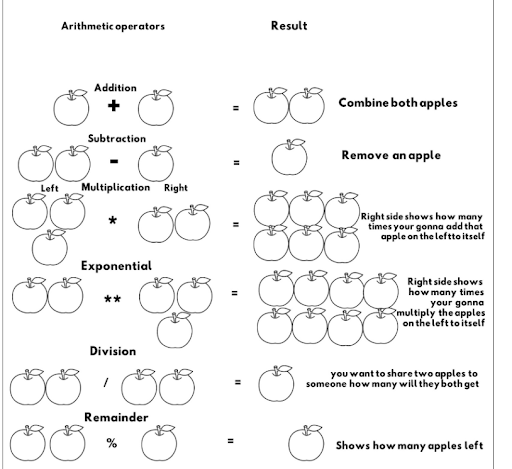
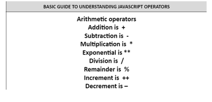
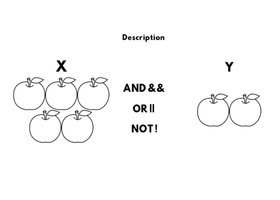
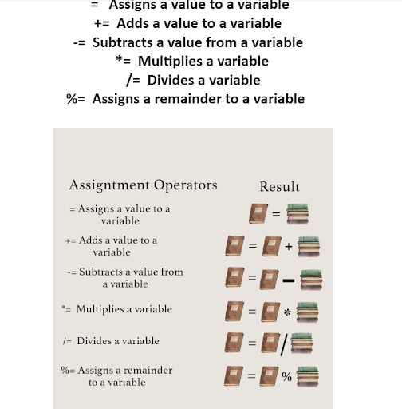

What are the Different Platforms for Streaming?
After choosing a streaming content we needed to understand that content and think of the different platforms we post this content into.There are different types of platforms for streaming. We have different platforms for streaming like netflix, facebook, youtube, twitch, etc.On this platform you can watch different kinds of streaming. Of course it has a purpose : it can demand online entertainment sources for tv shows, movies, and other streaming media. Netflix focuses on streaming services that offer a wide variety of award-winning tv shows, movies, anime, documentaries and more on thousands of internet-connected devices. Twitch is for live streaming platforms for gamers. The primary focus on twitch is video games. Facebook allows users to share pictures, music videos, articles as well as their own thoughts and opinions with however many people they like. It is not just focused on streaming. Youtube is a video sharing platform where users can watch, like, share, comment and upload their own videos. We have more streaming platforms with different focuses.
What are javascript operators



